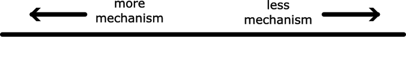
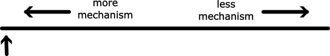
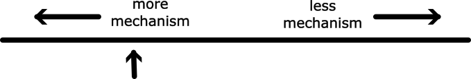
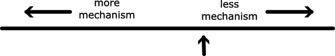

SISMID 2026: Forecasting and evaluation
Who are we?


Different types of models

- We can classify models by the level of mechanism they include
- All of the model types we will introduce in the next few slides have been used for COVID-19 forecasting (the US and/or European COVID-19 forecast hub)
NOTE: level of mechanism \(\neq\) model complexity


Complex agent-based models
Conceptually probably the closest to meteorological forecasting, if with much less real-time data.


Compartmental models
Aim to capture relevant mechanisms but without going to the individual level.

Semi-mechanistic models
- Include some epidemiological mechanism (e.g. SIR or the renewal equation)
- Add a nonmechanistic time component inspired by statistical models (e.g. random walk)
- For those familiar with the nowcasting course, this should be familiar